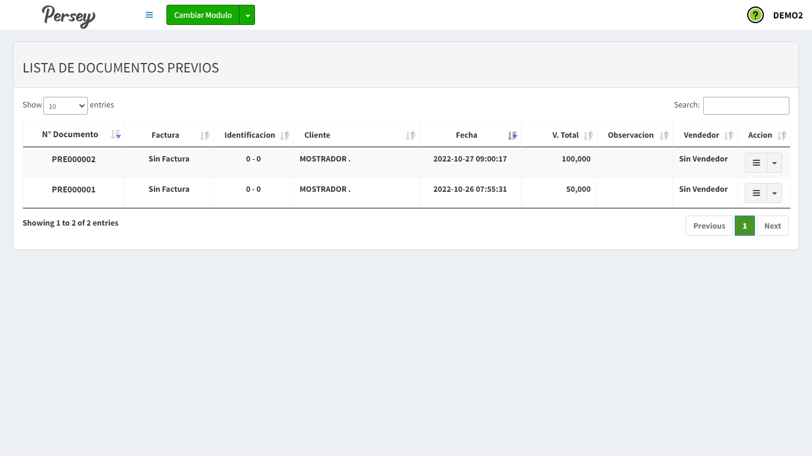

Primeros pasos#
En el menú lateral izquierdo va a encontrar todas las opciones que usted va a poder realizar en el modulo de Facturacion POS en el aplicativo de Persey.
Guia visual :


En el menú lateral izquierdo va a encontrar todas las opciones que usted va a poder realizar en el modulo de Facturacion POS en el aplicativo de Persey.
Aqui podras guiarte paso a paso como generar una factura POS, tambien aprenderás a visualizarlas y imprimir su factura en impresora POS
En esta sección podrá crear facturas diligenciando un formulario con los datos correspondientes

Debe llenar todos los campos correspondientes o si ya tiene una prefactura solo le da click donde dice prefactura y la selecciona automaticamente se le diligencia. Debe buscar y agregar los productos

Si su empresa tiene activado las retenciones le aparecerá un formulario al final donde las puede diligenciar

En esta sección podrá visualizar todas las facturas creadas, hacer una nota credito , duplicar la factura y imprimir la factura desde una impresora POS

En esta seccion podrá visualizar todos los reportes por diferentes categorías como por periodos, por impuestos, por grupos y mas.
Para ver este reporte debe diligenciar el formulario , escoger el talonario, la fecha desde-hasta y darle click en el boton que dice VER. Tambien puede descargarlo en PDF dandole click en el boton que dice PDF

Para ver este reporte debe diligenciar el formulario , escoger el talonario, la fecha desde-hasta y darle click en el boton que dice VER. Tambien puede decargarlo en PDF o Excel dando click en el boton PDF o Excel

Para ver este reporte debe diligenciar el formulario , escoger el talonario, el grupo, la fecha desde-hasta y darle click en el boton que dice VER. Tambien puede descargarlo en PDF dandole click en el boton que dice PDF

Para ver este reporte debe diligenciar el formulario , escoger el talonario, la fecha desde-hasta y darle click en el boton que dice VER. Tambien puede descargarlo en PDF dandole click en el boton que dice PDF

Para ver este reporte debe diligenciar el formulario , escoger el talonario, la fecha desde-hasta y si quiere un reporte detallado o resumiodo luego darle click en el boton que dice VER. Puede filtrar los reportes dependiendo si quiere por articulos, cliente y fecha. Tambien puede descargarlo en PDF dandole click en el boton que dice PDF

Para ver este reporte debe diligenciar el formulario , escoger tipo de nota , la fecha desde-hasta y luego darle click en el boton que dice VER. Tambien puede descargar el reporte en PDF dando click en el boton PDF

Para ver este reporte debe diligenciar el formulario , escoger el talonario, clientes, la fecha desde-hasta y darle click en el boton que dice VER. Tambien puede descargarlo en PDF dandole click en el boton que dice PDF

Para ver este reporte debe diligenciar el formulario , escoger el talonario, el vendedor, la fecha desde-hasta y si quiere un reporte detallado o resumiodo luego darle click en el boton que dice VER. Tambien puede descargarlo en PDF dandole click en el boton que dice PDF

Para ver este reporte debe diligenciar el formulario , escoger el talonario, el articulo, la fecha desde-hasta y si quiere un reporte detallado o resumiodo luego darle click en el boton que dice VER. Tambien puede descargarlo en PDF dandole click en el boton que dice PDF

Para ver el reporte de información exogena de venta solo debe seleccionar el año y darle click en el boton que dice VER, Tambien puede descargarlo en formato Excel dandole click en el boton Excel

En esta seccion Usted podrá visualizar todos los terceros que tiene registrados, tambien podrá editarlos, eliminarlos y agregar nuevos
Le aparecerán todos los terceros que tenga en una lista, usted puede modificarlos dando click en el boton amarillo y crear uno nuevo dando click en el boton que dice NUEVO

En esta seccion usted podrá registrar una prefactura y tambien podrá visualizar todas las prefacturas que ha registrado
Para crear un nuevo previo debe escoger o crear el cliente(tercero). Buscar los productos que desea añadir a su prefactura y darle guardar

Aqui le apareceran todos los previos o prefacturas que haya generado
